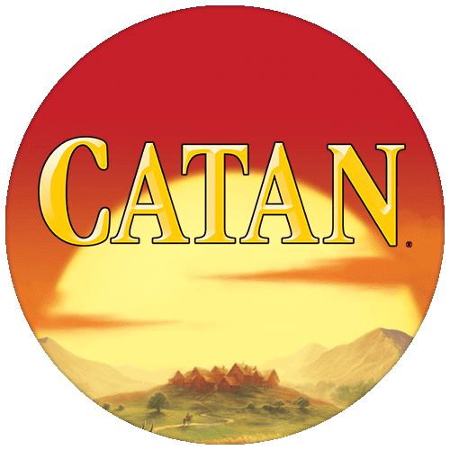

Online Catan
for offline players ♥
This is a special online version of Catan that requires you to have the original decks of card on your hand in order to play with. You'll have the board and the pieces online.
If you are looking for multiplayer online Catan, then colonist.io is the one. Or if you looking for the official version of the game, feel free to click here to open Catan Universe as they provided the full original Catan experience. I personally found the app is unnecessary heavy and the in-app purchases are far too expensive. Plus, I already have the original game with few expansions. The stack of boxes getting higher and become hard to travel with.
Then this simple idea came to me: What if we only carry the cards? The tiles, the pieces, the map,... could be online! The beauty of this idea is that Catan now becomes a card game that is very easy to transport. And, the even better part, the maps are becoming unlimited because I'm no longer limited by the sea boundaries, or by the number of tiles or chits or ports. I converted all the original maps from the original games, and borrowed many new and beautiful maps from Catan Collector – The Lost Maps.
The source code is here if you want to clone/fork/contribute. The project is under MIT license for free use.